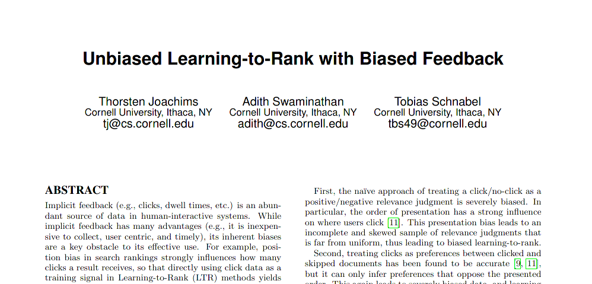
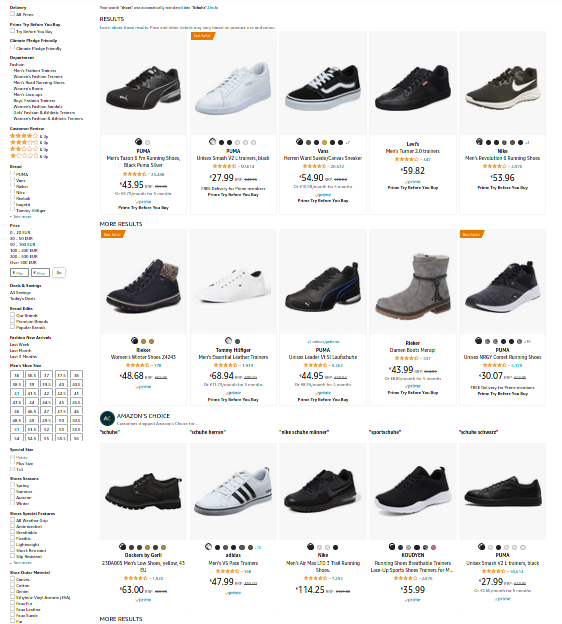

Overcoming bias
in search and recommendations
metarank.ai | github.com/metarank/metarank | Grebennikov Roman | 2022
This is me
- Long ago: PhD in CS, quant trading, credit scoring
- Past: Search & personalization for ~7 years
- Now:
UnemployedFull-time open-source contributor
Metarank
a swiss army knife of re-ranking
Ranking around us

Sort by # of clicks
- Pros: easy to implement
- Cons: new items are never on top
Self-degrading ranking
- People are lazy: top items get more clicks
- Popular items become even more popular
Behavioral biases
- Position: top items clicked more often
- Presentation: grid/pagination affects click probability
- Popularity: snickers vs no-name chocolate
- Model: train ML model on it's own output
Position bias
- We click on first items because they're on top
- Click on #1 - is it relevant or just first?
Experiment: movie search
 |
- Crowdsourced dataset with toloka.ai
- Top-30k movie-related queries from Google
- top-10k TMDB movies
- 650k labels: 8% relevant
Shooting yourself in the foot
- Toloka has unbiased "search relevance" template
- Made it biased with explicit item ordering
The trick: shuffled results
- Top-24 results by BM25 score, but randomly ranked
- relevance should be independent from position *
* - after outlier removal
Not only position
- presentation affects clicks
Presentation bias
- click % drop on a second row
Bias & search function
- Movie search: navigational function => low bias
- Ecommerce: discovery function => high bias
Not so independent
In practice you observe relevance + bias together
Learning-to-Rank 101
- Implicit feedback: clicks on items
- Item metadata as ranking factors
- Loss function: pairwise, NDCG
Not all clicks were made equal

Clicks as relevance labels?
- if observed_label = bias * true_label
- then true_label = observed_label / bias
IPW: Inverse Propensity Weighting

- How can we estimate the bias?
IPW in 10 seconds
- Shuffle ranking for small % of traffic
- Estimate the bias
- De-bias the remaining data
Estimating the bias
IPW: shuffling is dangerous
Problem: shuffling affects business metrics
https://www.youtube.com/watch?v=AYdOpfY8jQULess costly IPW
- Top-N shuffle: only top-3 positions are affected
- Pairwise swaps: over all traffic
- Multi-ranker: exploit ongoing a/b tests
ML model to predict bias?
- Only biased ranking factors: popularity, cost, position
- Predicted click probability == bias
- Weighting: prefer bottom-position clicks
- Sampling: drop some top-position clicks
A story of IPW
|
 |
|
Bias is context dependent, hard to estimate precisely
Bias-aware ML
Can we learn the relevance AND bias influence at once?
Bias-aware ranking
- Training: Use biased ranking factors as-is
- Inference: Replace these with constants
Practical bias-aware ML
Metarank demo: movie recommendations
Ranklens dataset
- Also crowd-sourced with toloka.ai
- ~3k people labelled favourite movies in ~100 categories
Metarank reranking

- Take a stream of historical/realtime events
- Re-rank top-N candidates for better NDCG
demo
Results
- Biased: NDCG=0.6002
- De-biased: NDCG=0.6060, +1%
Should you de-bias?
- Navigation vs discovery: it depends
- There are better algos than PAL
Extra

- Metarank: github.com/metarank/metarank
- MSRD dataset: github.com/metarank/msrd
- Ranklens dataset: github.com/metarank/ranklens
- PAL paper: dl.acm.org/doi/10.1145/3298689.3347033